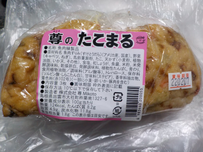
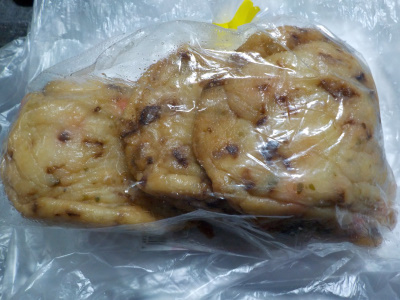

いいものを探そう ～出雲らへん～
島根県出雲市大社町杵築南1327-6
2022/02/03
尊のたこまる

尊って「みこと」って読むんですね。知りませんでした。
ネットで調べました。
よく使う「尊い（とうとい）」って読み方は、近ごろではアニメやアイドルなんかに使われるそうです。
知ったかぶって使ってるって思われると嫌なので、尊い言葉は使わない方がいいかな。

天ぷらにタコ、キャベツ、紅ショウガが入っているのでたこ焼き風。
たこ焼きではないけど、たこ焼きみたいで美味しい天ぷらでした。
天ぷらなのでたこ焼きと比較するのは変ですが、好きなタイプじゃないたこ焼き食べるならこの天ぷら買って食べた方がいいなって思いました。
【尊TOP】
【地域TOP】
【HPTOP】
【『大社町杵築らへん』の他の情報はこちら】
【おいしいものを食べよう。】【たくさん寝よう。】
【ソロ活をしよう!】【季節感のあることをしよう。】【動画視聴はほどほどに。】【当サイトの全てのコンテンツは無断転載禁止です。】